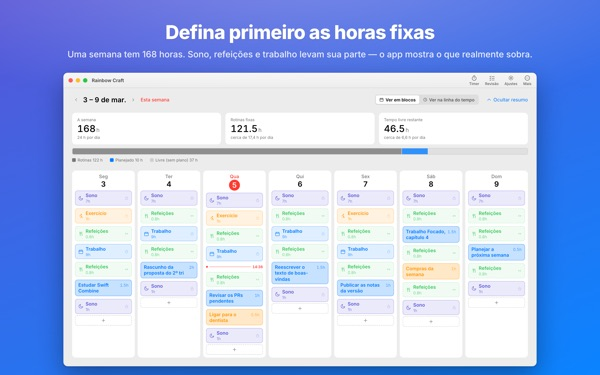
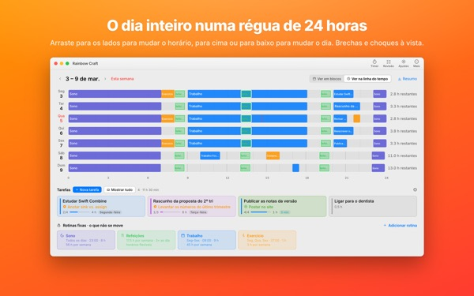
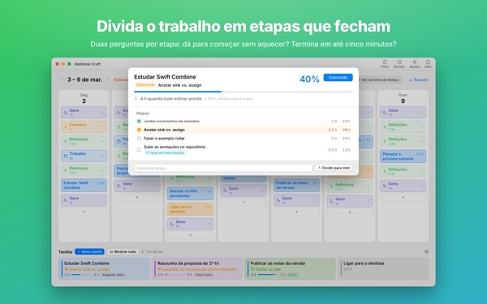
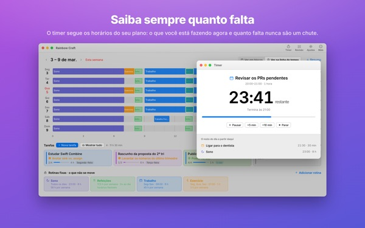

Cabe mesmo tudo
nesta semana?
O Rainbow Craft abre a sua semana por dia e por hora no Mac. Comece pelo tempo de que você não abre mão, como sono, refeições e trabalho, arraste as tarefas para os espaços livres e veja o que realmente cabe.
Planejamento, rotinas, tarefas, revisão, timer e importação da agenda são grátis.

Planeje uma semana aqui mesmo
Colocamos as quatro rotinas que o app sugere na primeira abertura. Ligue e desligue cada uma e solte tarefas nos dias.
A lista só cresce. A semana, não.
Uma lista de tarefas não diz se a sua semana dá conta dela. Depois que sono, refeições e deslocamento levam a parte deles, sobra menos do que você imagina. O Rainbow Craft mostra essas horas em números e quadrinhos e deixa você testar cada tarefa num espaço de verdade.
Veja o dia numa régua de 24 horas
A linha do tempo estende o dia sobre uma régua de 24 horas. Buracos e sobreposições aparecem na hora, e você escolhe como os compromissos que se cruzam ficam dispostos.
Traga reuniões e compromissos do Calendário do Mac sem digitar duas vezes. Se quiser, os planos também vão para uma agenda separada do Rainbow Craft, que você vê no iPhone. Suas outras agendas nunca são alteradas.

Quebre o que é grande em passos que terminam
Tarefas grandes empacam quando ainda tem algo no caminho. O app faz duas perguntas sobre cada passo: dá para começar sem aquecimento? Dá para terminar em cinco minutos?
O que passa nas duas é um fragmento para qualquer brecha de cinco minutos. O resto precisa de tempo reservado. Se o app errar, você decide.

O que você está fazendo e quanto falta
Na hora de começar, o plano passa para em andamento, e quando o tempo acaba o app pergunta se você terminou. O timer acompanha a sua programação.
O widget Timer Agora mostra a tarefa da vez e o tempo que falta sem abrir o app.

Feche a semana com uma checklist
A revisão semanal é um cartão por dia. Marque o que fez, fez pela metade ou pulou, e use isso para planejar a próxima semana.
Na mesma conta do iCloud, as tarefas vão e voltam entre este app e o Rainbow of Desire no iPhone, então o dia planejado no Mac vai com você.
Comece em três passos
- 1
Defina as horas fixas
O que se repete toda semana, como dormir, comer e trabalhar, vira rotina. O app não preenche nada por você.
- 2
Anote as tarefas
Uma por linha em Tarefas, lá embaixo. Ainda não precisa decidir quando.
- 3
Arraste para os dias
Solta num dia, a tarefa vira plano. A data mudou? Arraste para outro dia ou de volta para a lista.
A conta com as rotinas sugeridas
- Uma semana
- 168 horas
- Sono · 8 horas por dia
- 56 horas
- Refeições · três ao dia
- 17,5 horas
- Trabalho · estudos · 9 horas nos dias úteis
- 45 horas
- Exercício · 1 hora seg, qua e sex
- 3 horas
- Tempo que você tem de verdade nesta semana
- 46,5 horas
São só sugestões. Escolha e ajuste as rotinas à sua vida. Em dia de folga ou viagem, tire o trabalho só daquele dia.
Tudo o que você precisa para viver esta semana é grátis
Grátis
- Planos da semana e do dia, rotinas e tarefas sem limite
- Linha do tempo e divisão em passos
- Revisão semanal, também copiável como texto
- Timer e widget Timer Agora
- Importação da agenda
- Sincronização com o Rainbow of Desire no iPhone
- Tendências das últimas 2 semanas
Plus · Pro
- Plus: 8 semanas de tendências, seus melhores dias e horários
- Plus: planejado x real
- Plus: aplicar de uma vez o plano de uma semana que deu certo
- Pro: tudo do Plus e compartilhar sua agenda por link só de leitura
- Pro: uma compra libera o Pro também no app do iPhone
Cada nível em assinatura anual ou compra única vitalícia
Veja os preços no app ou na App Store. A assinatura anual renova automaticamente, a menos que seja cancelada pelo menos 24 horas antes do fim do período. O Pro comprado no iPhone também vale num Mac com a mesma conta do iCloud.
Perguntas frequentes
Preciso entrar no iCloud?
Não, se você só usa no Mac. É preciso para sincronizar com o iPhone e para compartilhar a agenda.
O app altera minhas agendas?
Nunca as agendas que você já tem. A importação só lê as que você escolhe. Se você ativar a escrita dos planos na agenda do Rainbow Craft, o app cria essa agenda separada e escreve só nela. Dá para apagá-la no app Calendário quando quiser.
As tarefas do Mac não aparecem no iPhone.
Confira se os dois aparelhos usam a mesma conta do iCloud e se o Rainbow of Desire está instalado no iPhone. A sincronização passa pelo iCloud e pode levar alguns minutos.
Fechar a janela fecha o app?
Não. O app continua aberto. Reabra a janela pelo menu Janela ou clicando no ícone do Dock.
O que acontece com minhas tarefas e planos quando atualizo?
Ficam exatamente como estão. As atualizações não mudam nem apagam o que você escreveu.
Como mudo o idioma do app?
Escolha no topo dos Ajustes, em Language · 언어 · 語言, e o app reabre nesse idioma. São 23 idiomas. Nomes de rotinas e tarefas que você escreveu não são traduzidos.
Troquei de Mac e perdi o Plus ou o Pro.
Entre com a mesma Conta Apple e clique em Restaurar compra nos Ajustes. Para cancelar, use os ajustes da sua conta na App Store.
Onde fica o que eu escrevo?
Sem conta, sem cadastro e sem servidor do desenvolvedor guardando seus planos. O que você escreve fica nos seus aparelhos e no seu próprio iCloud. O app envia estatísticas de uso anônimas que nunca incluem o que você escreve, e dá para desligar nos Ajustes em Enviar estatísticas de uso anônimas.
Travou ou viu algo estranho? Escreva para mizzking75@gmail.com. Nos Ajustes do app também tem uma opção de contato.